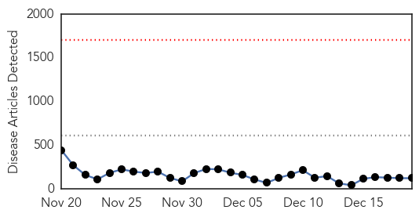
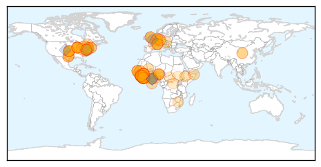
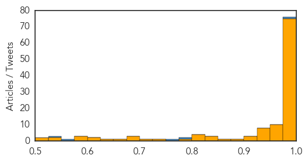
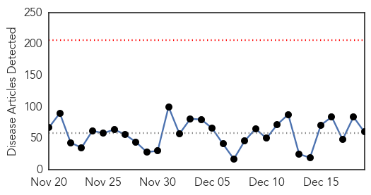
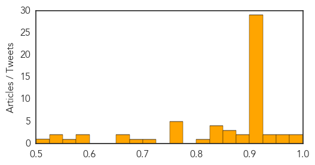

Ebola
30-Day Web Trend
0 alerts, 0 warnings

30-Day Twitter Trend
0 alerts, 0 warnings
Article Locations
Article Confidences
Top Articles:
- 1.000
- UN chief pledges support for Ebola-hit Liberia
- 1.000
- Minimizing the Risk of Exposure to Ebola Virus Disease in Canada through Strengthened Quarantine Measures
- 1.000
- Ebola Fight in Liberia is Working
- 1.000
- Ebola: UN Secretary-General will visit West Africa to 'show solidarity with those affected'
- 1.000
- Sierra Leone’s Top Doctor Succumb to Ebola The Eleventh Doctor of Twelve Infected
- 1.000
- UN head tours Ebola region, warns against let-up
- 1.000
- Officials: Child at U. of C. tests negative for Ebola
- 1.000
- UN Chief to Visit Ebola Nations Nine Months Later, as Top Sierra Leone Doctor Dies
- 1.000
- UN wants 'big surge' in effort to reduce Ebola transmission rate 19/12/2014
- 1.000
- Ebola crisis update - 18th December 2014 - Sierra Leone
- 1.000
- Sierra Leone's leading doctor dies of Ebola
- 1.000
- Sudan Vision Daily
- 1.000
- Top Sierra Leone Doctor Dies From Ebola
- 1.000
- 2014 was a busy, messy year for disease control
- 0.999
- Ban pledges UN support in tour of Ebola-hit West Africa
- 0.999
- Hospital prepared to care for Ebola patients
- 0.999
- Child being observed for Ebola symptoms after arriving at O'Hare
- 0.999
- Top Doctor In Sierra Leone Dies Of Ebola
- 0.999
- Chief doctor in Sierra Leone dies from Ebola
- 0.999
- In case of another Ebola outbreak
- 0.998
- Ban begins tour of Ebola-hit west Africa
- 0.998
- Ethiopians arrive in W Africa to fight Ebola
- 0.998
- U.N. Leader Urges West Africans To Change Traditions In Order To Stop Ebola
- 0.998
- UN chief, visiting Ebola region, urges respect for health rules
- 0.998
- Ban Ki-moon travels to West Africa to assess Ebola crisis
- 0.998
- Ebola Kills 11th Doctor In Sierra Leone; Massive Fire Destroys Medicine In Guinea
- 0.998
- United Nations chief Ban Ki-moon begins tour of Ebola-hit West Africa
- 0.998
- Dr. Fine: Ebola spread slowing down, but still a threat
- 0.997
- Ban Ki-moon kicks off tour of Ebola-hit west Africa
- 0.997
- Ghana should not relax on ebola
- 0.997
- Ban visits Ebola-hit West Africa, says zero cases “must be everyone’s goal” - Liberia
- 0.997
- Ebola Claims Another Major Victim
- 0.997
- U.N. chief, visiting Ebola countries, urges respect for health rules
- 0.996
- Canadian Forces medics, 2nd mobile lab heading to Sierra Leone for Ebola fight
- 0.996
- Report faults Ga., other states on fighting disease
- 0.996
- Canadian Forces medics, mobile lab to fight Ebola in Sierra Leone
- 0.996
- Where have Ebola fear-mongers gone?
- 0.995
- Ebola Death Toll Races Towards 7000, As Fight To End Scourge Continues
- 0.995
- Ban on tour to lift efforts to fight Ebola
- 0.995
- Cebu News, The Freeman Sections, The Freeman
- 0.995
- Stigma Of Sierra Leone's 'Ebola Orphans' Remains
- 0.995
- Canadian Forces medics head to Sierra Leone
- 0.994
- Meeting in Harlem says Black lives matter, from Ferguson to West Africa
- 0.994
- Child being observed at Chicago hospital to rule out Ebola
- 0.994
- Ebola crisis: Top Sierra Leone doctor dies from disease
- 0.994
- Ban Ki-Moon Pledges UN Support to West African Health Workers
- 0.994
- UPDATE 1-Child being observed at Chicago hospital to rule out Ebola
- 0.993
- Less Than Half Of Wisconsin Residents Got A Flu Shot In 2013, Report Finds
- 0.992
- 101 Ethiopian Medical personnel in the fight against Ebola in Sierra Leone
- 0.992
- Experimental Ebola vaccines approved by China for clinical testing
Showing top 50 articles...
Top Tweets:
- 0.977
- Ebola update: In the last 21 days, 1,695 new Ebola cases have been reported in 3 most affected countries, 1,261 of which in SierraLeone.
- 0.885
- http://t.co/XRMxkRo7Ny "Remembering health workers who died from Ebola in 2014". A tragic reminder of the impact of ebola in West Africa.
- 0.777
- RT: Grim count. The 11th SierraLeone doctor just died of Ebola. In all, 142 health workers were infected; 109 have died http:/…
- 0.768
- RT: Read how supported emergency ops center in Guinea, the hub of the Ministry of Health’s Ebola response http://t.co/V…
- 0.751
- Ebola Survivor Rick Sacra Returning to Fight Virus in Liberia http://t.co/2TMzfuOMWz TackleEbola
- 0.731
- Ebola and Indirect Effects on Health Service Function in Sierra Leone http://t.co/ekZGMvculH
- 0.701
- RT: Ebola Survivor Rick Sacra Returning to Fight Virus in Liberia http://t.co/2TMzfuOMWz TackleEbola
- 0.631
- Donate and support WHO Ebola response. You can help stop Ebola http://t.co/4PcOadSHL6 NoMoreEbola!... http://t.co/vEn1UKrxDY
- 0.618
- Ebola Guinea capital bans New Year festivities because of Ebola - RFI http://t.co/8WD2FwuwOx http://t.co/5nHfYIqvtF
- 0.596
- Decisive action needed to curb Ebola in. Sierra Leone [infographic]: http://t.co/mhpfSzaUY0 | via ElbowOutEbola
- 0.595
- RT: Donate and support WHO Ebola response. You can help stop Ebola http://t.co/WjrtoffUyw NoMoreEbola! http://t.co/WE92XuJuWG
- 0.551
- RT: Ebola preventive measures have no exceptions. UNSG Ban Ki-moon must wash hands upon landing in Liberia. @UN http://t…
- 0.535
- Could Christmas Worsen Ebola's Spread? http://t.co/KoiF4KdR7h
- 0.518
- Remembering health workers who died from Ebola in 2014 http://t.co/O7oNJWEnU1
Unknown
30-Day Web Trend
0 alerts, 0 warnings

30-Day Twitter Trend
0 alerts, 0 warnings

Article Locations

Article Confidences
Top Articles:
- 0.989
- WCAX.COM Local Vermont News, Weather and Sports-
- 0.984
- HIV Outbreak Causes Panic Over A Cambodia Village: 106 Tests Positive Of HIV Due To Unlicensed Medical Practitioner Re-using Needles During Treatment : HEADLINES : Youth Health Magzine
- 0.975
- Winona Health implementing extra precautions to prevent spread o
- 0.958
- Flu Spreading Across Northern Michigan
- 0.945
- Flu is now widespread
- 0.940
- Investigation into ERI C-diff ‘cluster’ continues
- 0.925
- Heath sophomore died of flu
- 0.922
- New tick-borne virus discovered after the death of Kansas man
- 0.917
- Chicago Tribune
- 0.917
- Chicago Tribune
- 0.917
- Chicago Tribune
- 0.917
- Chicago Tribune
- 0.917
- Chicago Tribune
- 0.917
- Chicago Tribune
- 0.917
- Chicago Tribune
- 0.917
- Chicago Tribune
- 0.917
- Chicago Tribune
- 0.917
- Chicago Tribune
- 0.917
- Chicago Tribune
- 0.917
- Chicago Tribune
- 0.917
- Chicago Tribune
- 0.917
- Chicago Tribune
- 0.917
- Chicago Tribune
- 0.917
- Chicago Tribune
- 0.917
- Chicago Tribune
- 0.917
- Chicago Tribune
- 0.917
- Chicago Tribune
- 0.917
- Chicago Tribune
- 0.917
- Chicago Tribune
- 0.917
- Chicago Tribune
- 0.917
- Chicago Tribune
- 0.914
- CONSUMER ALERT: 3 people now sick in Wisconsin due to listeria o
- 0.913
- UPDATE: Study not going ahead
- 0.910
- The world windows to Thailand
- 0.904
- Cambodia orders probe into mass HIV infection
- 0.894
- Minnesota Health, Agriculture Officials Investigate Listeria Outbreak Linked to Caramel Apples
- 0.878
- Two Minnesota deaths tied to contaminated caramel apples
- 0.866
- Turkey issues arrest warrant for Muslim cleric Gulen
- 0.860
- Two deaths in Minnesota tied to tainted caramel apples -officials
- 0.858
- Toss Out Your Caramel Apples
- 0.846
- Post Office employee contracts TB
- 0.840
- Jaundice spreads in Kangra
- 0.839
- Prepackaged Caramel Apples Linked To 5 Deaths
- 0.827
- Cambodian PM orders probe into mass HIV infection – BorneoPost Online
- 0.806
- Pet Rat's Scratch Kills Boy, CDC Warns of 'Rat-Bite Fever' Risks : News : Headlines & Global News
- 0.770
- Minnesota links caramel apples, 2 listeria deaths
- 0.767
- Caramel apple deaths: Listeria kills 4 and 28 ill, linked to seasonal treat
- 0.766
- Listeria in caramel apples kills 2 in Minnesota
- 0.762
- Prepackaged caramel apples linked to 4 deaths
- 0.760
- Prepackaged caramel apples linked to 4 deaths
Showing top 50 articles...
Top Tweets:
- 0.633
- FluFactFriday: If you get fluvax and still get the flu, a flu vaccine may make your illness milder. http://t.co/5PfSD0SZbO
- 0.583
- RT: En Plaza Las Américas. Niña: mamá, yo quiero ver la nieve. Mamá: no es nieve de verdad, es espuma...